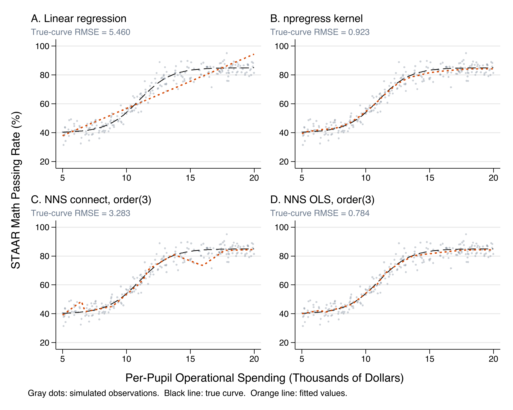
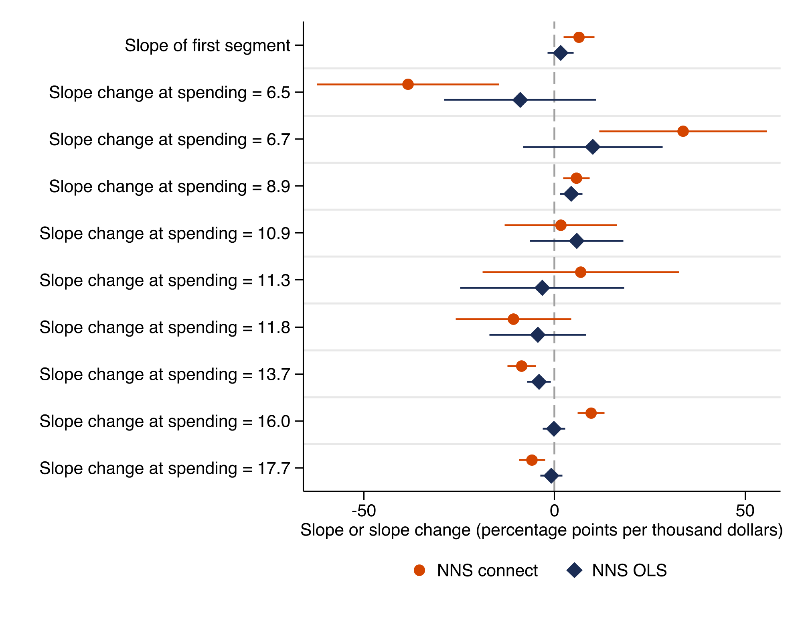
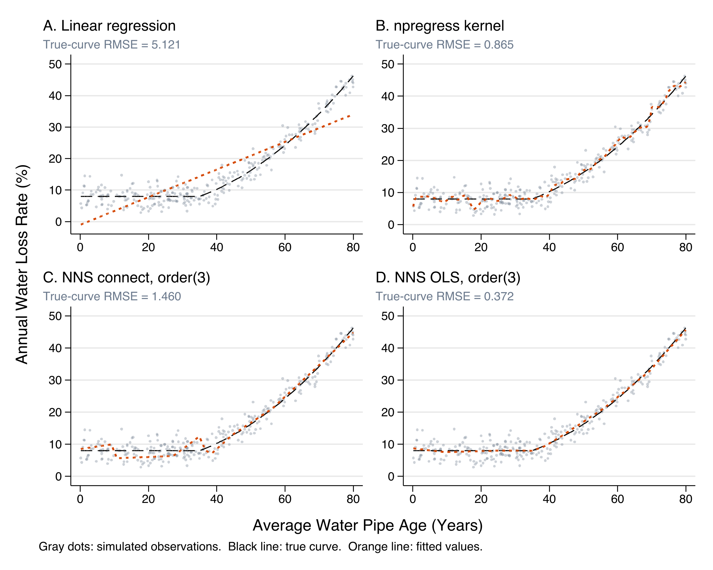
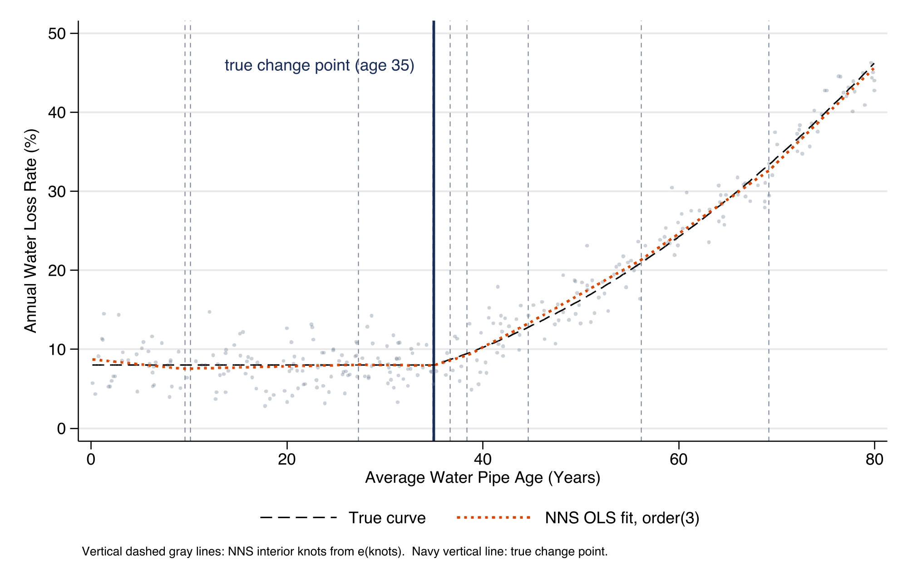
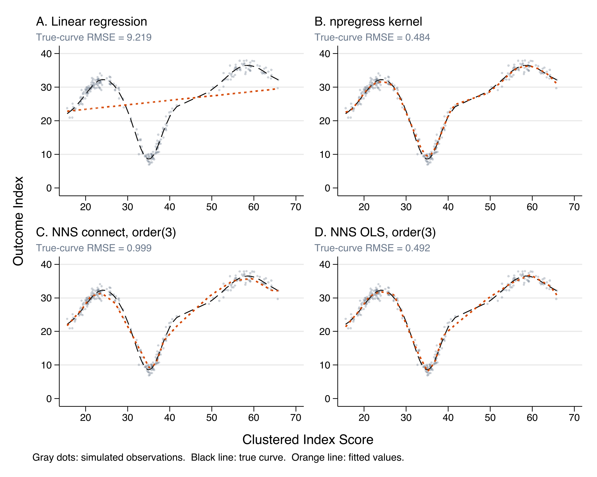
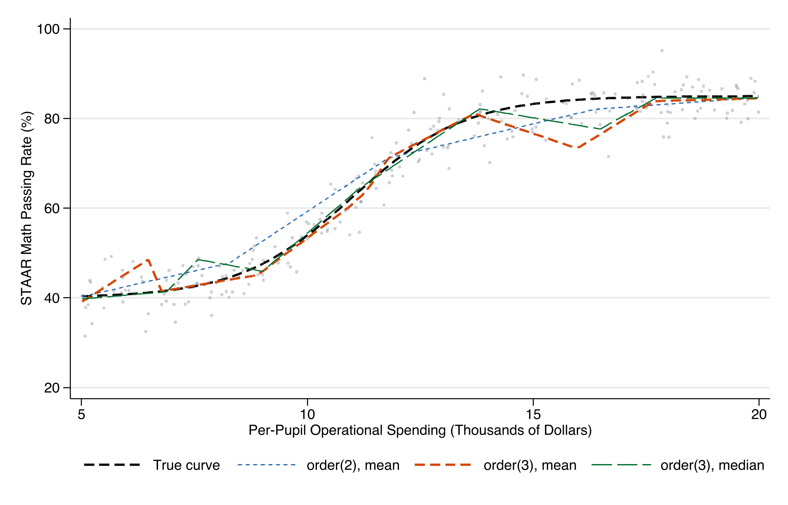
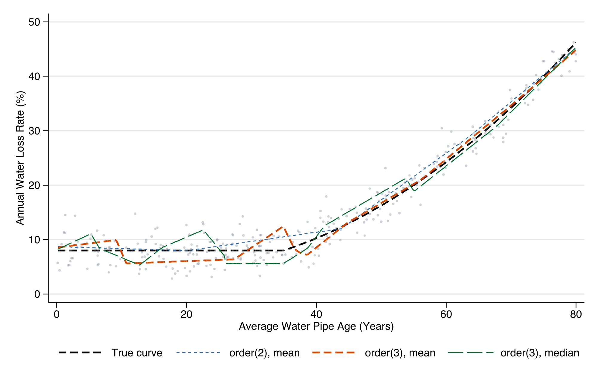
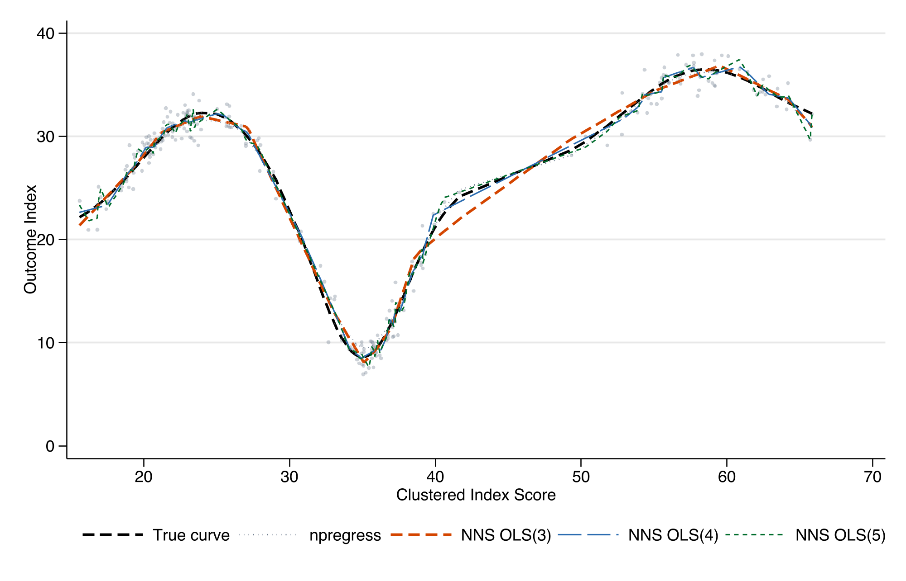
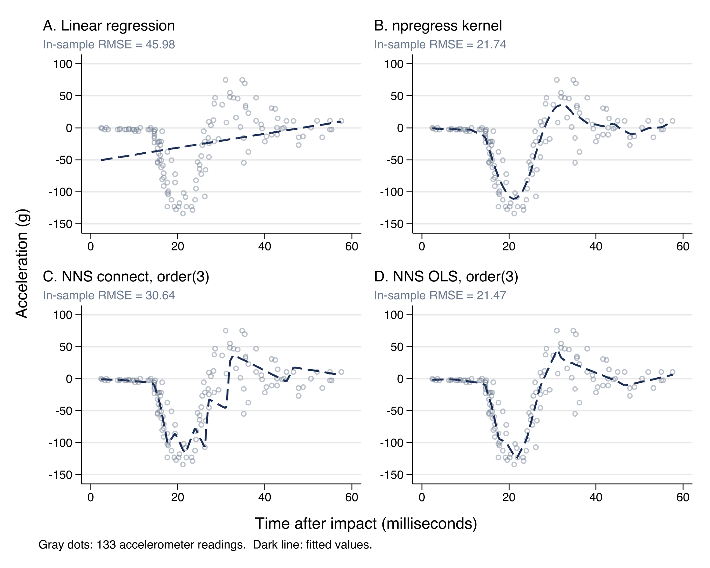
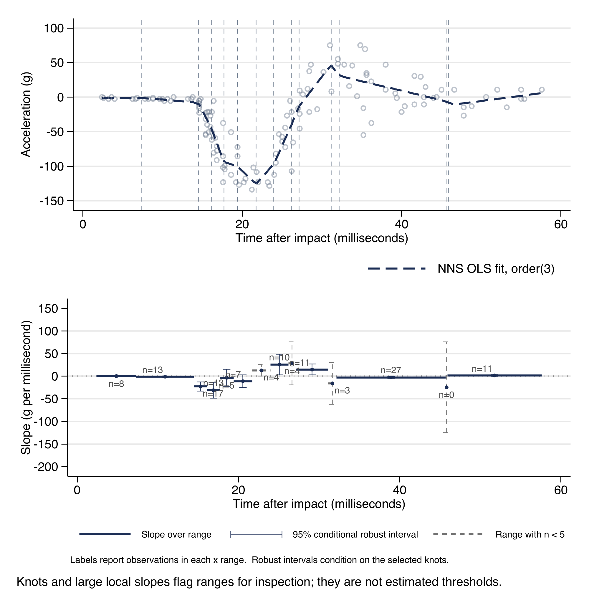

nnsreg fits a univariate NNS-style piecewise linear curve and posts the result as a Stata estimator. Use it to inspect bends, flat regions, slope changes, and whether those features survive sensitivity checks. The examples here match the help file, README, and Stata Journal draft.
This page is a companion to the Stata Journal article nnsreg: Reportable segment slopes for nonlinear relationships in Stata. The article makes a simple point: a flexible smoother can draw a nonlinear curve, but applied work often needs a few reportable statements about where a relationship is flat, steep, or changing, and nnsreg returns exactly that as ordinary Stata estimation results. The sections below follow the same path as the article: the questions the command answers, its syntax, the simulated designs that let us score it against a known curve, three worked examples, sensitivity diagnostics, and an interactive explorer for intuition. In each worked example, read the estimates table for the named first-segment slope and the slope-change coefficients, and read the figure for how well each method tracks the true curve. A kernel smoother often recovers a smooth curve at least as accurately; the point of nnsreg is the reportable segment summary it hands back, not a better fit.
Use nnsreg when you need to ask where a relationship bends, which part of the support is steep or flat, whether slope changes are stable across options, and whether a segmented fit adds value relative to regress or npregress kernel. Kernel smoothing remains a strong choice for smooth conditional-mean recovery; NNS is most useful when segmentation, clustered support, sharp local features, or stored slope-change output matter.
nnsreg depvar indepvar [if] [in] [, order(integer) noise(mean|median) method(connect|ols) partition(xy|xonly) minobs(integer) level(cilevel) vce(robust|cluster clustvar) slopes noplot knotlines graph_opts(string) generate(newvar)]order(#) controls partition depth. Larger values allow more line segments.noise(mean) uses means for centers and regression points.noise(median) is a robustness check for skewness or outliers.method(connect) connects NNS regression points directly.method(ols) estimates an OLS spline at NNS-derived knots.partition(xy) is the default NNS-style quadrant partition.partition(xonly) is a vertical-band sensitivity check.minobs(#) sets the smallest group the partition keeps splitting (default 8).slopes reports each segment's slope and standard error, and stores them in e(segments).vce(robust|cluster clustvar) passes a robust or cluster-robust covariance to the least-squares stage (with method(ols)).The reporting payoff lives in the stored results: e(knots) holds the data-derived knot locations, e(b) names the first-segment slope and each slope change, and e(segments) (or the slopes option) reports the cumulative slope in each range. These are what let you turn a fitted curve into a few lincom-testable statements, the article's central contribution. One honesty note carried over from the article: for method(connect) the standard errors are heuristic references from a rescaled OLS spline covariance, so read them as descriptive summaries of segment stability rather than as tests.
The education example simulates an S-shaped curve with diminishing returns. The water example simulates a flatter lower range and a sharper increase after an infrastructure-age threshold. The clustered peak/dip design simulates dense local regions with a peak, sharp dip, and recovery. These are simulated examples, so the figures test software behavior against known curves rather than estimating real policy effects.
Why simulate? Because the true curve is known in each design, the figures can score how well a method recovers the signal, not just how closely it fits the noisy points. That is the distinction the article measures with its true-curve RMSE. Each design also isolates a different challenge: a smooth curve (education), a threshold or kink (water), and clustered support with a sharp local feature (the clustered design). Watch how the same command behaves across all three.
. cd "`root'" /Users/ericbooth/Library/CloudStorage/GoogleDrive-eric.booth@texas2036.org/My D > rive/NNS-stata-public . adopath + "code" [1] (BASE) "/Applications/StataNow/ado/base/" [2] (SITE) "/Users/ericbooth/Library/CloudStorage/GoogleDrive-eric.boot > h@texas2036.org/Shared drives/Data and Research Team//_codeshare/" [3] "." [4] (PERSONAL) "/Users/ericbooth/Documents/Stata/ado/personal/" [5] (PLUS) "/Users/ericbooth/Library/Application Support/Stata/ado/plus > /" [6] (OLDPLACE) "~/ado/" [7] "code" . use "examples/texas_education.dta", clear (Texas School District Operational Funding and Achievement (Simulated)) . regress staar_pass spend_pupil Source | SS df MS Number of obs = 250 -------------+---------------------------------- F(1, 248) = 1569.26 Model | 69131.6852 1 69131.6852 Prob > F = 0.0000 Residual | 10925.3186 248 44.0537042 R-squared = 0.8635 -------------+---------------------------------- Adj R-squared = 0.8630 Total | 80057.0038 249 321.514072 Root MSE = 6.6373 ------------------------------------------------------------------------------ staar_pass | Coefficient Std. err. t P>|t| [95% conf. interval] -------------+---------------------------------------------------------------- spend_pupil | 3.767062 .0950945 39.61 0.000 3.579766 3.954358 _cons | 19.07044 1.254547 15.20 0.000 16.59951 21.54136 ------------------------------------------------------------------------------ . npregress kernel staar_pass spend_pupil Computing mean function Minimizing cross-validation function: Iteration 0: Cross-validation criterion = 2.9330971 Iteration 1: Cross-validation criterion = 2.9127808 Iteration 2: Cross-validation criterion = 2.8814364 Iteration 3: Cross-validation criterion = 2.8476389 Iteration 4: Cross-validation criterion = 2.8476389 Iteration 5: Cross-validation criterion = 2.8476389 Iteration 6: Cross-validation criterion = 2.8476389 Iteration 7: Cross-validation criterion = 2.8475597 Iteration 8: Cross-validation criterion = 2.8475597 Computing optimal derivative bandwidth Iteration 0: Cross-validation criterion = 12.549795 Iteration 1: Cross-validation criterion = 3.7776637 Iteration 2: Cross-validation criterion = 1.4772122 Iteration 3: Cross-validation criterion = 1.4772122 Iteration 4: Cross-validation criterion = 1.4772122 Iteration 5: Cross-validation criterion = 1.4772122 Iteration 6: Cross-validation criterion = 1.4772122 Iteration 7: Cross-validation criterion = 1.4772122 Iteration 8: Cross-validation criterion = 1.4758876 Iteration 9: Cross-validation criterion = 1.4758876 Iteration 10: Cross-validation criterion = 1.4758876 Iteration 11: Cross-validation criterion = 1.4758735 Bandwidth ----------------------------------- | Mean Effect -------------+--------------------- spend_pupil | .7410478 2.219111 ----------------------------------- Local-linear regression Number of obs = 250 Kernel : epanechnikov E(Kernel obs) = 185 Bandwidth: cross-validation R-squared = 0.9498 ------------------------------------------------------------------------------ staar_pass | Estimate -------------+---------------------------------------------------------------- Mean | staar_pass | 65.87711 -------------+---------------------------------------------------------------- Effect | spend_pupil | 3.212304 ------------------------------------------------------------------------------ Note: Effect estimates are averages of derivatives. Note: You may compute standard errors using vce(bootstrap) or reps(). . nnsreg staar_pass spend_pupil, order(3) method(connect) partition(xy) generat > e(fit_connect) Nonlinear Nonparametric Statistics (NNS) Regression Dependent variable: staar_pass Independent variable: spend_pupil Method: connect Noise reduction: mean Partition: xy Order: 3 Number of obs: 250 R-squared: 0.9294 Root MSE: 4.7638 ------------------------------------------------------------------------------ staar_pass | Coefficient Std. err. t P>|t| [95% conf. interval] -------------+---------------------------------------------------------------- spend_pupil | 6.414835 1.9931 3.22 0.001 2.488548 10.34112 knot1 | -38.42267 11.70671 -3.28 0.001 -61.48418 -15.36117 knot2 | 33.71038 10.7482 3.14 0.002 12.53707 54.88369 knot3 | 5.758648 1.702831 3.38 0.001 2.404173 9.113123 knot4 | 1.668066 7.205733 0.23 0.817 -12.52679 15.86292 knot5 | 6.868115 12.62836 0.54 0.587 -18.00898 31.74521 knot6 | -10.78198 7.428372 -1.45 0.148 -25.41542 3.851462 knot7 | -8.614286 1.809618 -4.76 0.000 -12.17912 -5.049449 knot8 | 9.589458 1.73666 5.52 0.000 6.168344 13.01057 knot9 | -5.920695 1.674757 -3.54 0.000 -9.219864 -2.621525 _cons | 6.99154 11.36595 0.62 0.539 -15.39869 29.38177 ------------------------------------------------------------------------------ . estimates store edu_connect . nnsreg staar_pass spend_pupil, order(3) method(ols) partition(xy) generate(fi > t_ols) Nonlinear Nonparametric Statistics (NNS) Regression Dependent variable: staar_pass Independent variable: spend_pupil Method: ols Noise reduction: mean Partition: xy Order: 3 Number of obs: 250 R-squared: 0.9494 Root MSE: 4.1190 ------------------------------------------------------------------------------ staar_pass | Coefficient Std. err. t P>|t| [95% conf. interval] -------------+---------------------------------------------------------------- spend_pupil | 1.596661 1.723323 0.93 0.355 -1.79818 4.991503 knot1 | -9.011045 10.12214 -0.89 0.374 -28.95104 10.92895 knot2 | 10.02821 9.293371 1.08 0.282 -8.279165 28.33559 knot3 | 4.362331 1.472343 2.96 0.003 1.461904 7.262758 knot4 | 5.818051 6.230395 0.93 0.351 -6.455449 18.09155 knot5 | -3.221368 10.91903 -0.30 0.768 -24.7312 18.28847 knot6 | -4.405113 6.422898 -0.69 0.493 -17.05783 8.247607 knot7 | -4.086812 1.564676 -2.61 0.010 -7.169128 -1.004496 knot8 | -.174616 1.501593 -0.12 0.908 -3.132662 2.78343 knot9 | -.8417628 1.448069 -0.58 0.562 -3.69437 2.010845 _cons | 32.08628 9.827502 3.26 0.001 12.72669 51.44586 ------------------------------------------------------------------------------ . estimates store edu_ols . estimates table edu_connect edu_ols, b se stats(r2 rmse N) ---------------------------------------- Variable | edu_conn~t edu_ols -------------+-------------------------- spend_pupil | 6.4148354 1.5966614 | 1.9931005 1.7233227 knot1 | -38.422673 -9.0110452 | 11.706709 10.122137 knot2 | 33.710379 10.028213 | 10.748203 9.293371 knot3 | 5.758648 4.3623309 | 1.7028315 1.4723433 knot4 | 1.6680664 5.8180512 | 7.2057327 6.2303947 knot5 | 6.8681152 -3.2213677 | 12.628356 10.919034 knot6 | -10.78198 -4.4051133 | 7.4283716 6.422898 knot7 | -8.6142864 -4.0868116 | 1.809618 1.5646756 knot8 | 9.5894583 -.17461598 | 1.7366596 1.5015926 knot9 | -5.9206949 -.84176281 | 1.6747568 1.4480687 _cons | 6.9915396 32.086278 | 11.36595 9.827502 -------------+-------------------------- r2 | .92941606 .94935002 rmse | 4.7637937 4.1189864 N | 250 250 ---------------------------------------- Legend: b/se


e(b), e(segments), and lincom return.Why this example: the education design is a smooth S-curve, the case where a kernel smoother should do at least as well as nnsreg. It shows what the command adds even when it does not win on accuracy. How to read the output: in the estimates table, the first coefficient (spend_pupil) is the slope of the first segment, and each knot# coefficient is the change in slope at an NNS-derived knot; their locations are in e(knots). In the figure, the kernel smoother and NNS OLS both recover the S-shape, while the connected NNS fit is more jagged because it interpolates the regression points rather than minimizing squared error. The lesson matches the article: on a smooth curve the smoother matches or beats NNS on accuracy, and what NNS adds is the reportable slope pieces, not a better fit.
. use "examples/texas_water.dta", clear (Texas Municipal Water Infrastructure and Water Loss (Simulated)) . regress water_loss pipe_age Source | SS df MS Number of obs = 300 -------------+---------------------------------- F(1, 298) = 1011.70 Model | 30133.6553 1 30133.6553 Prob > F = 0.0000 Residual | 8875.99985 298 29.7852344 R-squared = 0.7725 -------------+---------------------------------- Adj R-squared = 0.7717 Total | 39009.6552 299 130.467074 Root MSE = 5.4576 ------------------------------------------------------------------------------ water_loss | Coefficient Std. err. t P>|t| [95% conf. interval] -------------+---------------------------------------------------------------- pipe_age | .4373631 .0137504 31.81 0.000 .4103029 .4644234 _cons | -.6893824 .6275298 -1.10 0.273 -1.924334 .5455689 ------------------------------------------------------------------------------ . npregress kernel water_loss pipe_age Computing mean function Minimizing cross-validation function: Iteration 0: Cross-validation criterion = 1.7831585 Iteration 1: Cross-validation criterion = 1.7809987 Iteration 2: Cross-validation criterion = 1.777016 Iteration 3: Cross-validation criterion = 1.769988 Iteration 4: Cross-validation criterion = 1.7588352 Iteration 5: Cross-validation criterion = 1.7440795 Iteration 6: Cross-validation criterion = 1.7440795 Iteration 7: Cross-validation criterion = 1.7440498 Iteration 8: Cross-validation criterion = 1.7439518 Iteration 9: Cross-validation criterion = 1.7438719 Iteration 10: Cross-validation criterion = 1.7438719 Iteration 11: Cross-validation criterion = 1.7438719 Computing optimal derivative bandwidth Iteration 0: Cross-validation criterion = .03408631 Iteration 1: Cross-validation criterion = .03370792 Iteration 2: Cross-validation criterion = .03365267 Iteration 3: Cross-validation criterion = .03362412 Iteration 4: Cross-validation criterion = .03362255 Bandwidth ----------------------------------- | Mean Effect -------------+--------------------- pipe_age | 3.935402 5.639192 ----------------------------------- Local-linear regression Number of obs = 300 Kernel : epanechnikov E(Kernel obs) = 300 Bandwidth: cross-validation R-squared = 0.9583 ------------------------------------------------------------------------------ water_loss | Estimate -------------+---------------------------------------------------------------- Mean | water_loss | 16.70531 -------------+---------------------------------------------------------------- Effect | pipe_age | .4462689 ------------------------------------------------------------------------------ Note: Effect estimates are averages of derivatives. Note: You may compute standard errors using vce(bootstrap) or reps(). . nnsreg water_loss pipe_age, order(3) method(connect) partition(xy) generate(f > it_connect) Nonlinear Nonparametric Statistics (NNS) Regression Dependent variable: water_loss Independent variable: pipe_age Method: connect Noise reduction: mean Partition: xy Order: 3 Number of obs: 300 R-squared: 0.9294 Root MSE: 3.0344 ------------------------------------------------------------------------------ water_loss | Coefficient Std. err. t P>|t| [95% conf. interval] -------------+---------------------------------------------------------------- pipe_age | .0861409 .2219984 0.39 0.698 -.3507977 .5230796 knot1 | -16.2525 6.230598 -2.61 0.010 -28.5156 -3.989393 knot2 | 16.15814 6.084856 2.66 0.008 4.18189 28.1344 knot3 | .706108 .1558647 4.53 0.000 .3993342 1.012882 knot4 | -2.071645 .4384428 -4.73 0.000 -2.934591 -1.208699 knot5 | 2.439061 .5337381 4.57 0.000 1.388555 3.489568 knot6 | .2821719 .3608054 0.78 0.435 -.4279677 .9923114 knot7 | -2.290321 .4260193 -5.38 0.000 -3.128815 -1.451827 knot8 | 2.049209 .3825173 5.36 0.000 1.296336 2.802081 knot9 | .0676376 .2284458 0.30 0.767 -.3819909 .517266 _cons | 8.991754 1.143016 7.87 0.000 6.742063 11.24145 ------------------------------------------------------------------------------ . estimates store water_connect . nnsreg water_loss pipe_age, order(3) method(ols) partition(xy) generate(fit_o > ls) Nonlinear Nonparametric Statistics (NNS) Regression Dependent variable: water_loss Independent variable: pipe_age Method: ols Noise reduction: mean Partition: xy Order: 3 Number of obs: 300 R-squared: 0.9586 Root MSE: 2.3637 ------------------------------------------------------------------------------ water_loss | Coefficient Std. err. t P>|t| [95% conf. interval] -------------+---------------------------------------------------------------- pipe_age | -.2771159 .1729283 -1.60 0.110 -.6174744 .0632427 knot1 | 5.750165 4.853398 1.18 0.237 -3.802325 15.30266 knot2 | -5.467069 4.739871 -1.15 0.250 -14.79611 3.861976 knot3 | .0010077 .1214126 0.01 0.993 -.2379574 .2399728 knot4 | .7846341 .3415302 2.30 0.022 .1124322 1.456836 knot5 | -.3411592 .4157617 -0.82 0.413 -1.159464 .4771455 knot6 | .2781807 .2810537 0.99 0.323 -.274991 .8313523 knot7 | -.2000422 .3318528 -0.60 0.547 -.853197 .4531125 knot8 | .4977472 .2979664 1.67 0.096 -.0887121 1.084207 knot9 | .1723862 .1779506 0.97 0.333 -.1778572 .5226297 _cons | 9.234832 .890366 10.37 0.000 7.482408 10.98726 ------------------------------------------------------------------------------ . estimates store water_ols . estimates table water_connect water_ols, b se stats(r2 rmse N) ---------------------------------------- Variable | water_co~t water_ols -------------+-------------------------- pipe_age | .08614092 -.27711587 | .22199838 .17292827 knot1 | -16.252496 5.7501653 | 6.2305983 4.8533985 knot2 | 16.158144 -5.4670686 | 6.0848564 4.739871 knot3 | .706108 .00100767 | .15586465 .12141262 knot4 | -2.0716453 .78463415 | .43844276 .34153019 knot5 | 2.4390613 -.34115924 | .53373814 .41576166 knot6 | .28217186 .27818066 | .36080544 .28105367 knot7 | -2.290321 -.20004223 | .42601929 .33185278 knot8 | 2.0492085 .49774722 | .38251728 .29796637 knot9 | .06763758 .17238624 | .22844579 .17795056 _cons | 8.9917543 9.2348322 | 1.1430162 .89036601 -------------+-------------------------- r2 | .92942593 .95860916 rmse | 3.0344014 2.363683 N | 300 300 ---------------------------------------- Legend: b/se


e(knots), dashed): several land near the true change point at age 35.Why this example: the water curve is flat for young pipes and rises after a change point near age 35, so it tests whether the command can locate a threshold. How to read the output: read e(knots) and the figure to see several NNS knots land near that change point; the first-segment slope is close to zero (flat young pipes) and the terminal slope is clearly positive (deteriorating old pipes). That flat-then-rising contrast is a single lincom on the stored coefficients. This is the interpretive case the article highlights: the command reports where the relationship turns and how steep it is on each side, not just that it curves.
. use "examples/clustered_peak_dip.dta", clear (Clustered peak/dip benchmark data (Simulated)) . regress outcome_index cluster_score Source | SS df MS Number of obs = 260 -------------+---------------------------------- F(1, 258) = 9.90 Model | 892.314762 1 892.314762 Prob > F = 0.0018 Residual | 23250.6217 258 90.1186888 R-squared = 0.0370 -------------+---------------------------------- Adj R-squared = 0.0332 Total | 24142.9365 259 93.215971 Root MSE = 9.4931 ------------------------------------------------------------------------------ outcome_in~x | Coefficient Std. err. t P>|t| [95% conf. interval] -------------+---------------------------------------------------------------- cluster_sc~e | .1305761 .0414966 3.15 0.002 .048861 .2122912 _cons | 20.09065 1.587675 12.65 0.000 16.9642 23.2171 ------------------------------------------------------------------------------ . npregress kernel outcome_index cluster_score Computing mean function Minimizing cross-validation function: Iteration 0: Cross-validation criterion = 2.310699 Iteration 1: Cross-validation criterion = 2.2655508 Iteration 2: Cross-validation criterion = 2.1688701 Iteration 3: Cross-validation criterion = 1.9546779 Iteration 4: Cross-validation criterion = 1.5002421 Iteration 5: Cross-validation criterion = 1.0791909 Iteration 6: Cross-validation criterion = 1.0791909 Iteration 7: Cross-validation criterion = 1.0791909 Iteration 8: Cross-validation criterion = 1.0791909 Iteration 9: Cross-validation criterion = 1.0719036 Iteration 10: Cross-validation criterion = 1.0719036 Iteration 11: Cross-validation criterion = 1.0719036 Iteration 12: Cross-validation criterion = 1.0717424 Iteration 13: Cross-validation criterion = 1.0717424 Iteration 14: Cross-validation criterion = 1.0717424 Computing optimal derivative bandwidth Iteration 0: Cross-validation criterion = .49995534 Iteration 1: Cross-validation criterion = .49995534 Iteration 2: Cross-validation criterion = .49577144 Iteration 3: Cross-validation criterion = .49466302 Iteration 4: Cross-validation criterion = .49391157 Iteration 5: Cross-validation criterion = .49391157 Iteration 6: Cross-validation criterion = .49391157 Iteration 7: Cross-validation criterion = .49390382 Bandwidth ----------------------------------- | Mean Effect -------------+--------------------- cluster_sc~e | 2.330919 3.145219 ----------------------------------- Local-linear regression Number of obs = 260 Kernel : epanechnikov E(Kernel obs) = 260 Bandwidth: cross-validation R-squared = 0.9804 ------------------------------------------------------------------------------ outcome_in~x | Estimate -------------+---------------------------------------------------------------- Mean | outcome_in~x | 24.85717 -------------+---------------------------------------------------------------- Effect | cluster_sc~e | .6148018 ------------------------------------------------------------------------------ Note: Effect estimates are averages of derivatives. Note: You may compute standard errors using vce(bootstrap) or reps(). . nnsreg outcome_index cluster_score, order(3) method(connect) partition(xy) ge > nerate(fit_connect) Nonlinear Nonparametric Statistics (NNS) Regression Dependent variable: outcome_index Independent variable: cluster_score Method: connect Noise reduction: mean Partition: xy Order: 3 Number of obs: 260 R-squared: 0.9580 Root MSE: 1.9788 ------------------------------------------------------------------------------ outcome_in~x | Coefficient Std. err. t P>|t| [95% conf. interval] -------------+---------------------------------------------------------------- cluster_sc~e | 1.120714 .3435739 3.26 0.001 .4439788 1.79745 knot1 | .7115666 .5646065 1.26 0.209 -.4005354 1.823669 knot2 | -1.299189 .5264169 -2.47 0.014 -2.336069 -.2623088 knot3 | -1.96334 .3913636 -5.02 0.000 -2.734207 -1.192474 knot4 | -.6935102 .3443562 -2.01 0.045 -1.371787 -.0152338 knot5 | -14.2029 5.216118 -2.72 0.007 -24.47705 -3.92874 knot6 | 16.82894 6.535287 2.58 0.011 3.956428 29.70146 knot7 | .8329994 2.819879 0.30 0.768 -4.7213 6.387299 knot8 | 2.250302 1.585729 1.42 0.157 -.8730993 5.373704 knot9 | -2.312938 .646902 -3.58 0.000 -3.587137 -1.038739 knot10 | -.2645972 .4882782 -0.54 0.588 -1.226356 .6971614 knot11 | -.9356679 .3568239 -2.62 0.009 -1.638502 -.2328339 knot12 | -.8161133 .390281 -2.09 0.038 -1.584847 -.0473792 knot13 | .2797959 .7418032 0.38 0.706 -1.181329 1.740921 _cons | 4.923034 6.345917 0.78 0.439 -7.576481 17.42255 ------------------------------------------------------------------------------ . estimates store cluster_connect . nnsreg outcome_index cluster_score, order(4) method(ols) partition(xy) genera > te(fit_ols) Nonlinear Nonparametric Statistics (NNS) Regression Dependent variable: outcome_index Independent variable: cluster_score Method: ols Noise reduction: mean Partition: xy Order: 4 Number of obs: 260 R-squared: 0.9876 Root MSE: 1.1617 ------------------------------------------------------------------------------ outcome_in~x | Coefficient Std. err. t P>|t| [95% conf. interval] -------------+---------------------------------------------------------------- cluster_sc~e | .848714 .4348906 1.95 0.052 -.0083493 1.705777 knot1 | .4883385 1.024861 0.48 0.634 -1.531412 2.508089 knot2 | 2.268363 2.698766 0.84 0.402 -3.050248 7.586974 knot3 | -1.606461 3.081166 -0.52 0.603 -7.678689 4.465767 knot4 | -2.176678 3.392765 -0.64 0.522 -8.86299 4.509634 knot5 | 3.338294 8.821542 0.38 0.705 -14.04681 20.7234 knot6 | -.9716296 8.330028 -0.12 0.907 -17.38808 15.44483 knot7 | -71.03825 38.46235 -1.85 0.066 -146.8382 4.761663 knot8 | 71.16127 38.07552 1.87 0.063 -3.876297 146.1988 knot9 | -8.957038 5.979216 -1.50 0.136 -20.74062 2.826539 knot10 | 7.804726 5.650968 1.38 0.169 -3.331955 18.94141 knot11 | -1.668727 1.213896 -1.37 0.171 -4.06102 .7235651 knot12 | -1.633284 1.009825 -1.62 0.107 -3.623403 .356835 knot13 | -1.963866 .5414126 -3.63 0.000 -3.030858 -.8968732 knot14 | 1.262768 .7775381 1.62 0.106 -.2695702 2.795106 knot15 | 1.322237 1.763162 0.75 0.454 -2.152526 4.796999 knot16 | -.1685952 5.175368 -0.03 0.974 -10.36798 10.03079 knot17 | 1.893056 4.712225 0.40 0.688 -7.393592 11.1797 knot18 | 16.84392 19.60827 0.86 0.391 -21.7992 55.48703 knot19 | -29.43101 37.56457 -0.78 0.434 -103.4616 44.59961 knot20 | 14.46965 18.95416 0.76 0.446 -22.88437 51.82367 knot21 | -9.168316 197.2372 -0.05 0.963 -397.8747 379.5381 knot22 | 10.41407 198.8902 0.05 0.958 -381.5501 402.3783 knot23 | -1.659817 4.637367 -0.36 0.721 -10.79894 7.479303 knot24 | 4.642198 3.558037 1.30 0.193 -2.369826 11.65422 knot25 | -4.931933 2.660125 -1.85 0.065 -10.17439 .3105251 knot26 | 2.386942 3.200908 0.75 0.457 -3.921268 8.695151 knot27 | -2.864625 2.064314 -1.39 0.167 -6.932884 1.203633 knot28 | .33081 .5215223 0.63 0.527 -.6969834 1.358603 knot29 | 1.51865 2.049536 0.74 0.459 -2.520486 5.557785 knot30 | -3.583161 4.27606 -0.84 0.403 -12.01023 4.843911 knot31 | -8.266013 45.2846 -0.18 0.855 -97.51092 80.97889 knot32 | 9.526355 44.04327 0.22 0.829 -77.2722 96.32491 knot33 | 1.122705 2.569632 0.44 0.663 -3.941412 6.186823 knot34 | -1.732688 1.440612 -1.20 0.230 -4.571782 1.106407 knot35 | -.6975396 1.022802 -0.68 0.496 -2.713232 1.318153 knot36 | -.2510963 1.092438 -0.23 0.818 -2.404026 1.901833 knot37 | .7499142 .5836791 1.28 0.200 -.4003751 1.900203 _cons | 9.237177 7.324369 1.26 0.209 -5.197368 23.67172 ------------------------------------------------------------------------------ . estimates store cluster_ols . estimates table cluster_connect cluster_ols, b se stats(r2 rmse N) ---------------------------------------- Variable | cluster_~t cluster_~s -------------+-------------------------- cluster_sc~e | 1.1207143 .84871403 | .34357394 .43489055 knot1 | .71156658 .48833855 | .56460649 1.0248605 knot2 | -1.2991889 2.2683631 | .52641689 2.6987664 knot3 | -1.9633404 -1.6064606 | .39136359 3.0811665 knot4 | -.69351016 -2.1766779 | .34435624 3.3927646 knot5 | -14.202897 3.3382944 | 5.2161183 8.8215416 knot6 | 16.828942 -.9716296 | 6.5352868 8.330028 knot7 | .83299941 -71.038246 | 2.8198794 38.462346 knot8 | 2.2503022 71.16127 | 1.5857294 38.075518 knot9 | -2.3129376 -8.957038 | .64690201 5.9792159 knot10 | -.26459718 7.8047255 | .48827817 5.650968 knot11 | -.93566785 -1.6687273 | .35682393 1.2138956 knot12 | -.81611331 -1.6332842 | .39028098 1.0098251 knot13 | .27979586 -1.9638656 | .74180324 .54141263 knot14 | 1.2627678 | .77753807 knot15 | 1.3222366 | 1.7631621 knot16 | -.16859517 | 5.1753684 knot17 | 1.8930562 | 4.7122255 knot18 | 16.843915 | 19.608266 knot19 | -29.431011 | 37.564574 knot20 | 14.469648 | 18.954156 knot21 | -9.1683163 | 197.23717 knot22 | 10.414075 | 198.89024 knot23 | -1.6598172 | 4.6373671 knot24 | 4.6421982 | 3.5580372 knot25 | -4.931933 | 2.660125 knot26 | 2.3869415 | 3.2009078 knot27 | -2.8646254 | 2.0643135 knot28 | .33080999 | .52152232 knot29 | 1.5186498 | 2.0495358 knot30 | -3.583161 | 4.2760598 knot31 | -8.2660132 | 45.284598 knot32 | 9.5263547 | 44.04327 knot33 | 1.1227055 | 2.5696316 knot34 | -1.732688 | 1.4406117 knot35 | -.69753958 | 1.0228016 knot36 | -.25109634 | 1.0924381 knot37 | .74991418 | .5836791 _cons | 4.9230341 9.2371775 | 6.3459174 7.3243687 -------------+-------------------------- r2 | .9579939 .98764614 rmse | 1.9787975 1.1617167 N | 260 260 ---------------------------------------- Legend: b/se

Why this example: observations cluster in three regions with a sharp dip between them, the setting the NNS literature identifies as favorable to partition-based fits, because a single kernel bandwidth must compromise across regions of very different local density. How to read the output: NNS OLS recovers the known curve more closely than the kernel here. The larger point comes from the article's 100-replication Monte Carlo: in this design the segmented fit matches the best smoother's average accuracy while varying far less from sample to sample, so its advantage is reliability rather than a lower average error. This example uses order(4), one step finer than the default, because the sharp local features reward a little more resolution.
The verification script exports table_model_diagnostics.csv with a common in-sample R^2, observed RMSE, and true-curve RMSE. In the current run, npregress kernel and NNS OLS are close in the smooth education and water simulations, while NNS OLS improves substantially in the clustered peak/dip design.
How to read the sensitivity figures: each one overlays fits across order() and noise() choices. The question to ask is whether the substantive shape survives the variations: the plateau in education, the flat-then-rising threshold in water, the peak and dip in the clustered design. When a feature appears in every variant, it is safe to report; when it disappears between order(2) and order(3), or between mean and median centers, report it as tentative. The clustered figure also shows the failure mode: at order(5) the fit adds local movement that improves in-sample fit but drifts from the true curve, the overfitting the article warns against. Running this small grid before reporting a bend is the habit the article recommends.

order() and noise().
order() and noise().
order().The simulated designs use known curves so each method can be scored against the truth. To watch nnsreg on data it was not built around, the article turns to the motorcycle-impact benchmark: accelerometer readings against time after impact (webuse motorcycle). The regressor is heavily tied and clustered, and the response has a flat run, a sharp trough, and a rebound, so this is the command's favorable case on real data.


e(knots)), which concentrate in the impact trough where the response changes fastest.Because the true curve is unknown here, the article scores accuracy by repeated cross-validation. On held-out error the NNS OLS spline and the kernel smoother finish close together, with npregress series lowest; the value of nnsreg is the reportable segment slopes it hands back and its ability to score held-out points directly from stored results. Reproduce it with motorcycle_example.do.
The explorer below is a teaching visualization for one idea from the article: the tradeoff between resolution and noise that the order() option controls. It does not run nnsreg and it is not a Stata estimation result. Instead it lets you set a known curve and watch how a coarser or finer piecewise-linear fit tracks it, so the sensitivity figures above become intuitive.
What the sliders do. Three of them shape the true curve you are trying to recover: Threshold sets where the curve kinks (as pipe age 35 does in the water example), Post-threshold slope sets how steeply it rises after the kink, and Noise amplitude adds wiggle around it. The fourth, Partition order, controls the fit: raising it lets the line-segment fit use more pieces.
How to read the canvas. The gray dots are synthetic observations, the navy line is the smooth reference curve you set with the sliders, and the orange line is the piecewise-linear fit. The note under the canvas reports how many segments the current order uses.
What to try. Raise Partition order from 1 toward 6 and watch the orange fit hug the navy curve more closely, since more segments follow local shape. Then raise Noise amplitude and keep the order high, and watch the orange fit start chasing the noise instead of the curve. That is overfitting, the same failure the article shows at order(5) in the clustered design, and the reason the default is order(3) paired with a sensitivity check rather than the highest order available.
What this display simplifies. To stay fast in a browser, the segments here are placed at even spacing along the curve, and the fit is drawn on the reference curve rather than estimated from the scattered dots. The real nnsreg differs in exactly the way that matters: it places its knots adaptively from the data through the partial-moment partition, so they concentrate where the data bend rather than at even intervals, and it fits the actual observations. Use the worked examples and figures above for how the command truly behaves; use this explorer only to feel the detail-versus-noise tradeoff.
net install nnsreg, from("https://raw.githubusercontent.com/ericabooth/NNS-stata-public/main/github") replace